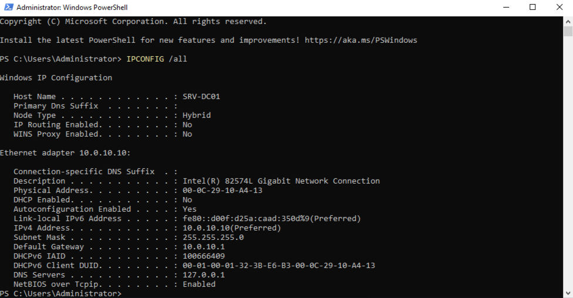
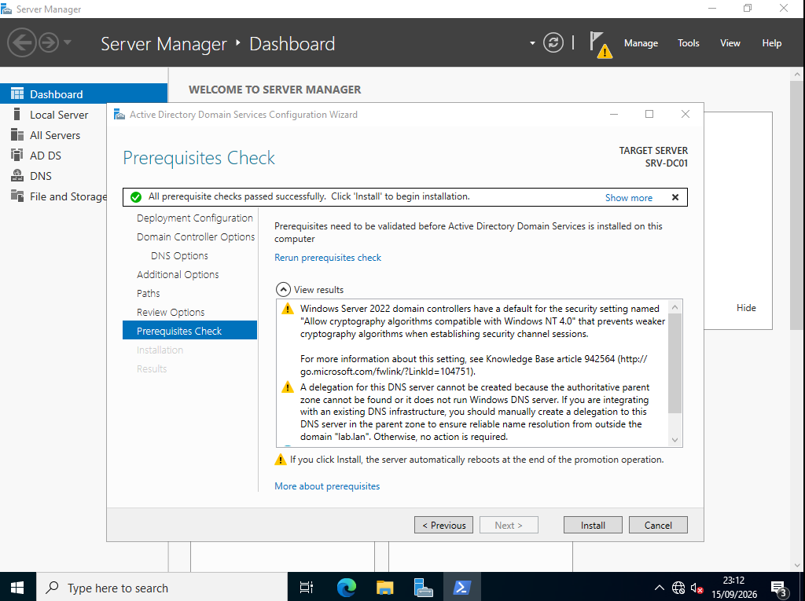
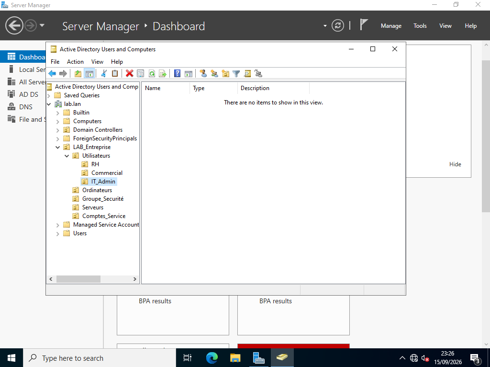
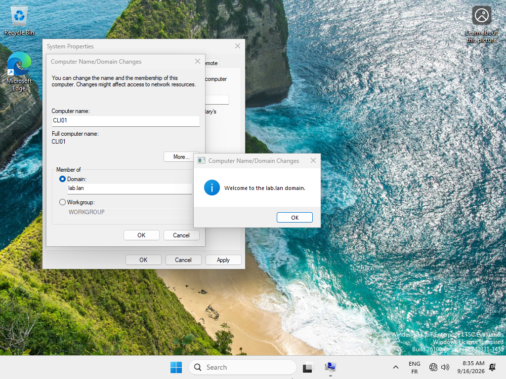
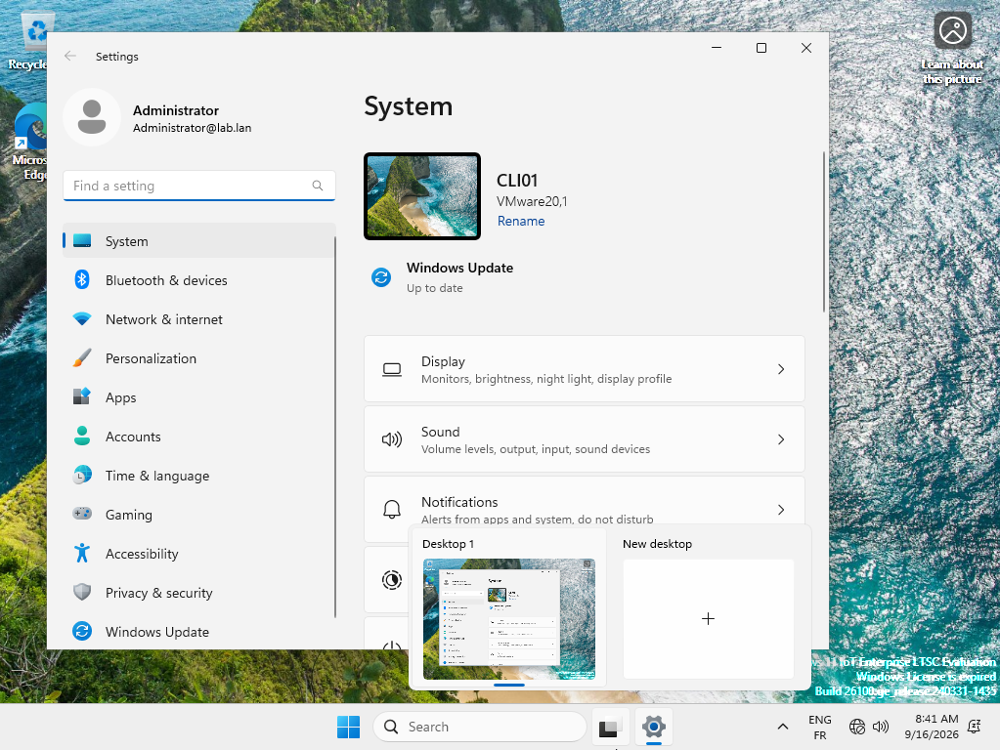
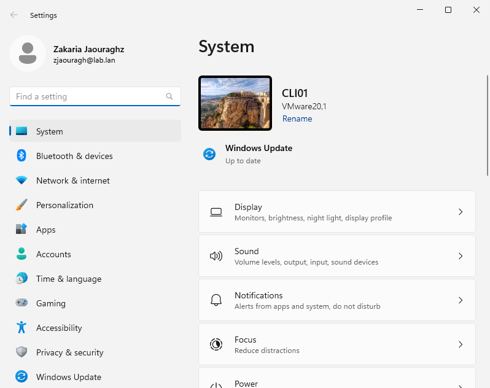
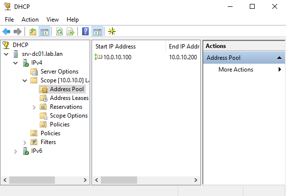
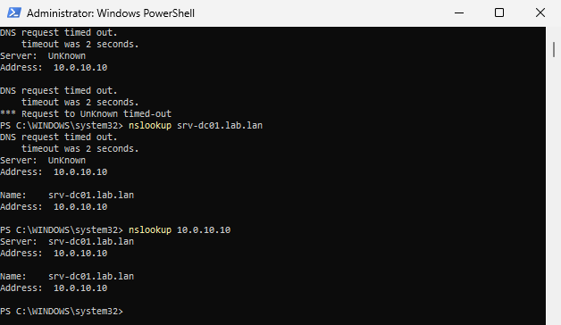
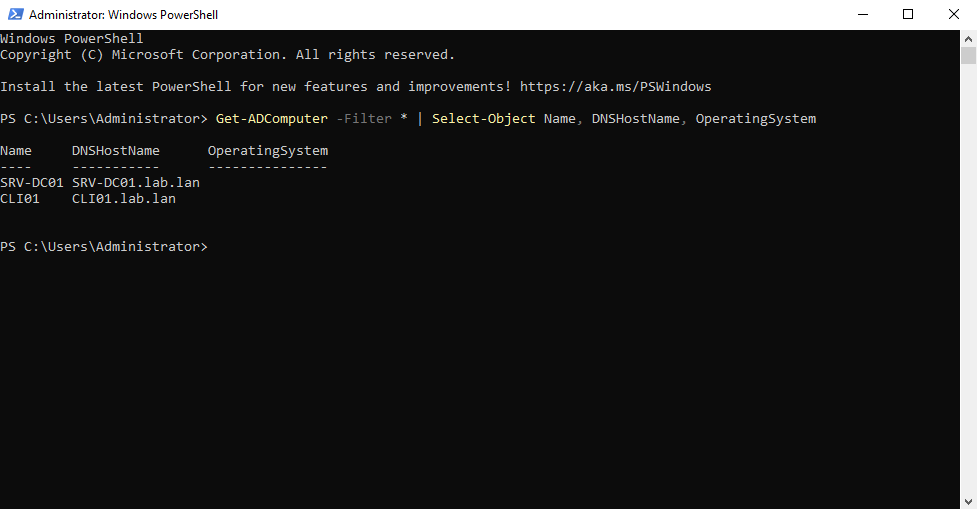

Lab 1 : Fondations d'Infrastructure — Active Directory, DNS & DHCP
Avertissement méthodologique : Ce laboratoire documente la mise en place du socle système élémentaire. Il s'agit des fondations techniques nécessaires (serveur d'identité, résolution de noms, distribution d'adresses et poste client managé) destinées à accueillir les architectures avancées (durcissement GPO, scripts d'automatisation PowerShell, pare-feu pfSense et supervision ITSM).
1. Architecture Réseau du Socle
L'ensemble des machines virtuelles est isolé au sein d'un réseau privé étanche (Host-Only) sans accès direct au réseau domestique :
| Nœud | Système d'Exploitation | Nom FQDN | Rôle principal | Adressage IP |
|---|---|---|---|---|
| Contrôleur de Domaine | Windows Server 2022 Datacenter | SRV-DC01.lab.lan |
AD DS, DNS Autoritaire, Serveur DHCP | 10.0.10.10/24 (Fixe) |
| Poste de Travail Client | Windows 11 Enterprise LTSC | CLI01.lab.lan |
Client d'entreprise joint au domaine | 10.0.10.100/24 (Bail DHCP) |
| Passerelle Virtuelle | Pare-feu (Futur pfSense) | FW01.lab.lan |
Passerelle de routage & filtrage | 10.0.10.1/24 |
2. Configuration IP Fixe & Nommage du Serveur
Préalablement à toute promotion en contrôleur de domaine, l'interface réseau a été configurée avec une adresse IP statique et un résolveur DNS local (127.0.0.1) pour éviter toute dérive d'adressage via la commande ipconfig /all :

3. Promotion du Domaine lab.lan & Contrôle d'Intégrité
Après installation des binaires du rôle AD DS, la création de la forêt racine a passé l'ensemble des tests de validation de prérequis Microsoft sans erreur bloquante :

4. Compartimentation de l'Annuaire (5 Unités d'Organisation)
Pour structurer la future application des stratégies de sécurité (GPO) et ne pas utiliser les conteneurs par défaut, une arborescence dédiée a été déployée sous l'OU racine LAB_Entreprise :
- Utilisateurs : Découpés par services (
RH,Commercial,IT_Admin). - Ordinateurs : Séparation des postes fixes et portables.
- Groupe_Securité, Serveurs, Comptes_Service.

5. Jonction du Client Windows 11 & Gestion des Identités
Le poste CLI01 a été joint au domaine lab.lan après authentification auprès de l'annuaire d'entreprise :

Validation de la première session d'administration :
La session administrateur de domaine (Administrator@lab.lan) a été ouverte sur le poste Windows 11 pour vérifier la descente des paramètres locaux :

Création du compte utilisateur nominatif :
Un compte d'exploitation a été créé dans l'OU IT_Admin (Zakaria JAOURAGH - zjaouragh). La session itinérante s'ouvre de manière autonome via Kerberos :

6. Déploiement DHCP & Résolution d'Incident Réseau
Le rôle DHCP a été déployé et autorisé dans l'annuaire avec une étendue dédiée aux postes collaborateurs (10.0.10.100 - 10.0.10.200) :

7. Diagnostic DNS Inverse & Validation Globale
Résolution du Timeout DNS :
Initialement, la commande nslookup échouait avec un timeout de 2 secondes en interrogeant l'adresse IP (Server: UnKnown).
Cause : Absence de Zone de recherche inversée (Reverse Lookup Zone).
* Remédiation : Création de la zone 10.0.10.in-addr.arpa et ajout du pointeur PTR du serveur.
* Résultat :* Résolution directe et inverse instantanée sans aucun délai :

Inventaire de l'Annuaire (Validation PowerShell) :
Vérification de la cohérence de la base de données ntds.dit affichant les deux machines répertoriées avec leurs systèmes d'exploitation respectifs via la commande Get-ADComputer :

Prochaine Étape :
Ce socle étant validé, la suite des travaux se concentre sur le Projet 2 : Durcissement de sécurité (5 GPO ANSSI) et Automatisation du provisionnement massif via PowerShell.